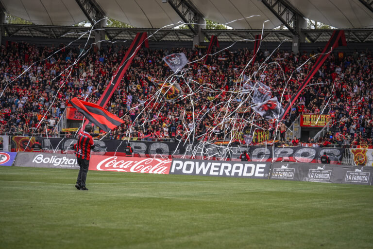
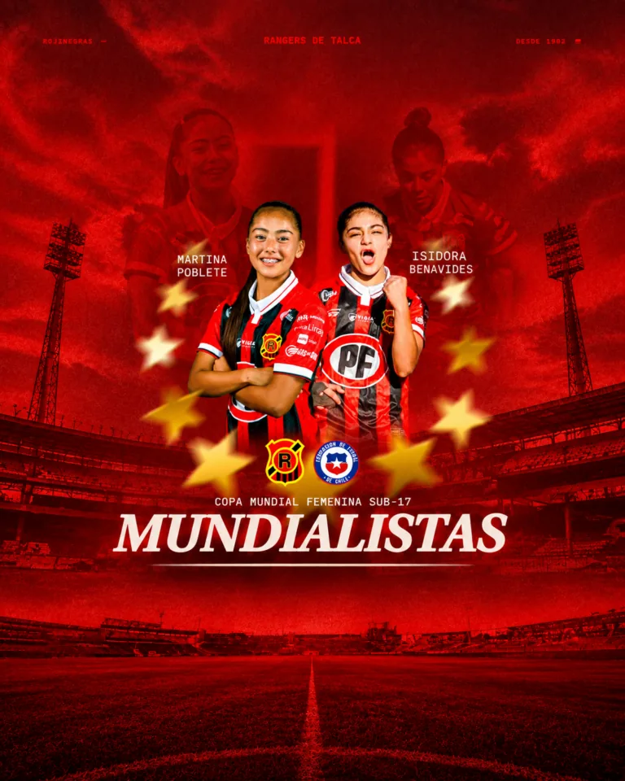
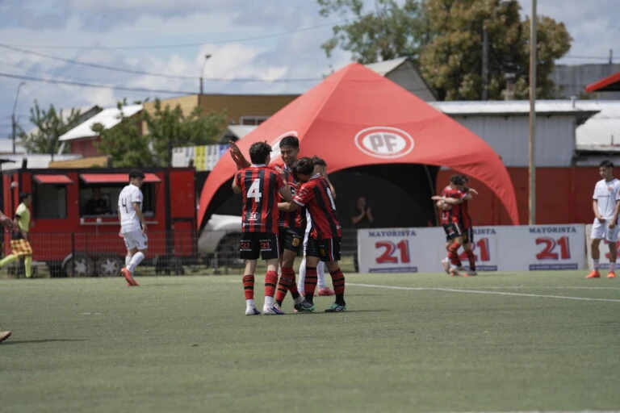
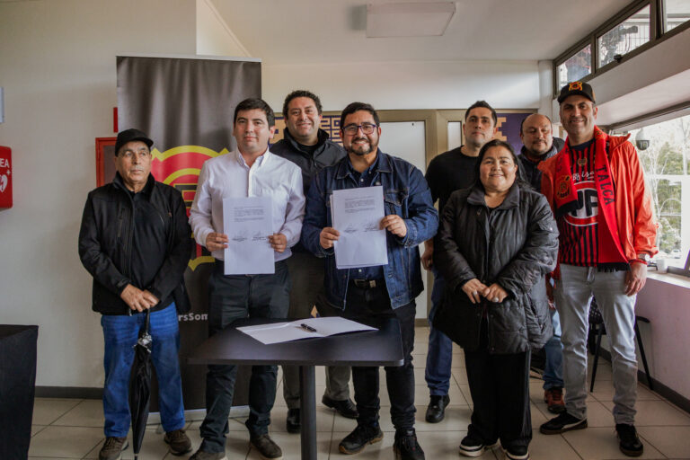
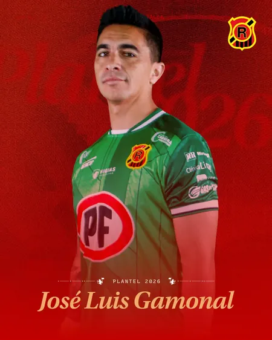
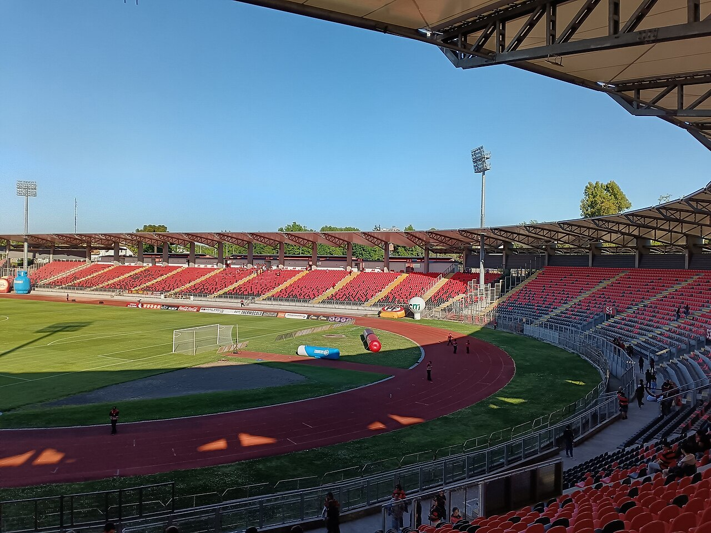
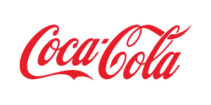

Primer equipoAforo confirmado para el duelo entre Rangers y Cobreloa
Toda la información del operativo y el aforo para uno de los partidos más esperados de la temporada en el Estadio Iván Azócar Bernales.
Leer nota →
El Gigante del Maule
Más de un siglo de historia rojinegra. Vive al club dentro y fuera de la cancha: noticias, equipos y la pasión del Piducano.
Actualidad

Primer equipoToda la información del operativo y el aforo para uno de los partidos más esperados de la temporada en el Estadio Iván Azócar Bernales.
Leer nota →
Fútbol femenino
Fútbol formativo
ClubPlantel
Figura rojinegra

Arquero
El arco rojinegro.
Ficha de demostración · datos editables, no oficiales.
Ver plantel →Desde 1902
El 2 de noviembre nace Rangers de Talca, uno de los clubes más antiguos del fútbol chileno.
Rangers es elegido para integrar el fútbol profesional; en 1953 debuta en Primera División.
Vicecampeón de Primera División, su mejor campaña histórica, con Iván “Pocholo” Azócar como capitán.
Rangers representa a Chile en la Copa Libertadores, un hito internacional del club.
Tres coronas en la Primera B consolidan al Gigante del Maule.
Subcampeón del Torneo de Apertura, tras eliminar a Colo-Colo en semifinales.

Nuestra casa
Rangers TV
Resúmenes, entrevistas y la previa de cada partido. Todo el contenido audiovisual rojinegro en el canal oficial de YouTube.
Ver en YouTube ↗La hinchada
“Rangers es Talca, y Talca late rojinegro.”
Más de un siglo acompañando al Gigante del Maule, dentro y fuera de la cancha. Sé parte de la familia rojinegra y sigue al club en sus redes oficiales.
Auspiciadores

Rangers Store
Edición rojinegra local, con el escudo del Gigante del Maule.
Precio referencial Ver en la tienda ↗Buzos, polerones y ropa de entrenamiento rojinegra.
Precio referencial Ver en la tienda ↗Bufandas, gorros y accesorios para la hinchada piducana.
Precio referencial Ver en la tienda ↗Vitrina de demostración · los productos y precios se gestionan en la tienda oficial. No hay compra dentro del prototipo.